Jardim Urbano funciona melhor na horizontal. Vire seu celular para continuar.
Estágio 1·🌿0 / 4
🎒
💧
Maranta-zebrina
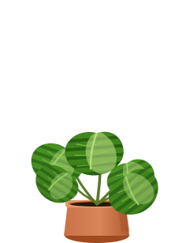
🌿
Samambaia-asplênio
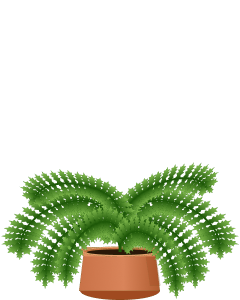
☀️
Palmeira-juçara
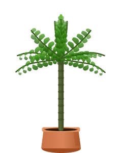
🌺
Bromélia-gusmânia
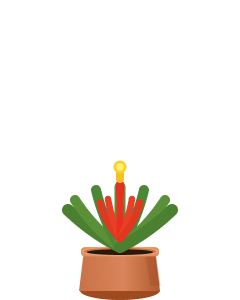
💧
Ipê-amarelo
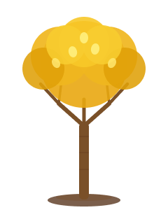
✂️
Manacá-da-serra
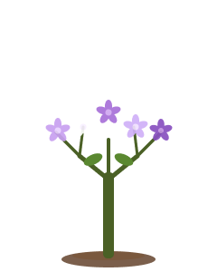
🌸
Quaresmeira
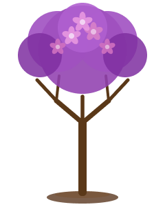
🔒
Jabuticabeira
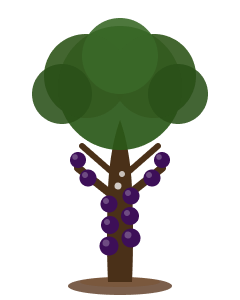
Cuide das outras primeiro
☔
Íris-da-praia
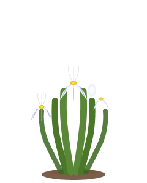
☔
Guaivira
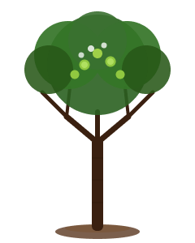
☔
Ingá-feijão
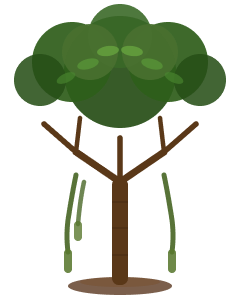
☔
Taboa
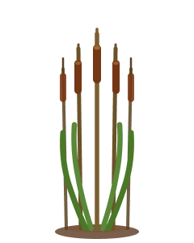
Jabuticaba
🌿
Maranta-zebrina
🌿
Samambaia-asplênio
🌴
Palmeira-juçara
🌺
Bromélia-gusmânia
🌿🌺🍃🌸🌿
Jornada concluída
|
🌱🌱
🌿
Guia de Plantas
Catálogo botânico · Jardim Urbano
Mata Atlântica — bioma ameaçado que ainda pulsa em cada canteiro de São Paulo.
🏅
Seu Certificado de Guardião
Como o seu nome deve aparecer no certificado?
🌿
🌿
🌿
🌿
🌳
Jardim Urbano · Mata Atlântica
Certificado de Guardião
❧ ✦ ❧
Este certificado reconhece que
—
completou a jornada Jardim Urbano, cuidou de espécies nativas
da Mata Atlântica em todos os estágios e demonstrou comprometimento com a
conservação da flora brasileira.